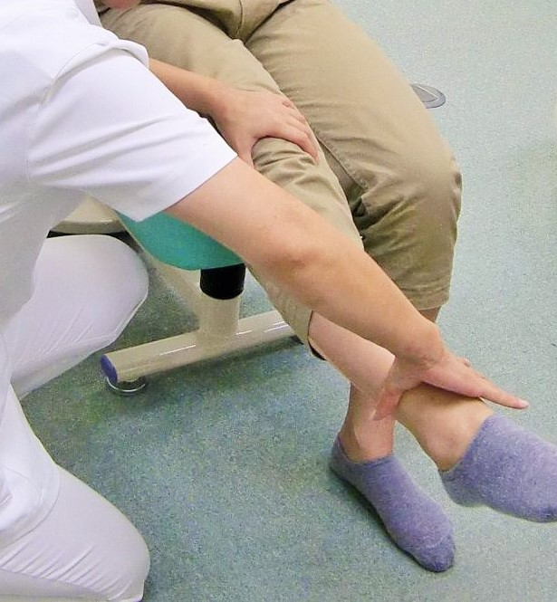

診療のご案内Information
診療までの流れ
1問診票の記入
あらかじめ予診録に受傷日と痛い所（診てほしい所）を記入していただきます。
2問診
受傷時の状況、現在の症状、過去の傷病歴、通院の有無など詳しくお聞きします。

3診察
姿勢や身体の動きを徒手検査で診て、関節可動域を確認し、圧痛や硬結、腫れ・熱感を触診により判断し、現在の症状を把握します。
4治療方法の説明
原因や症状に応じてどのように施術を行うか決定し、それを説明します。治療方法に対する希望や不明な点がありましたら何でもご相談ください。
5治療
疼痛除去や免疫力、自律神経機能及び自然治癒力を向上させるために罨法、電気刺激治療、手技治療、鍼（はり）、運動療法など必要に応じて行います。
6治療後の説明
施術を終え、結果に応じて次回からの施術計画や自宅での管理についてお話しします。